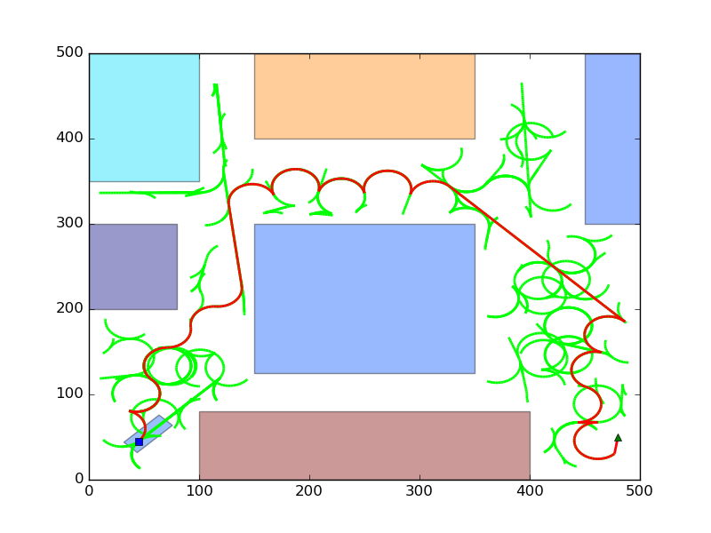
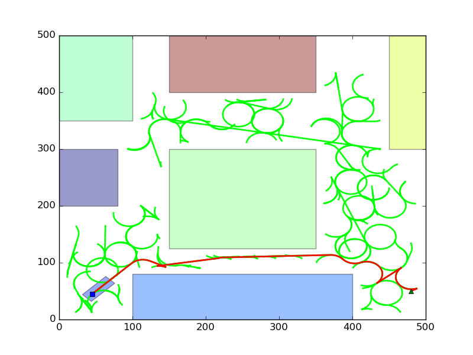
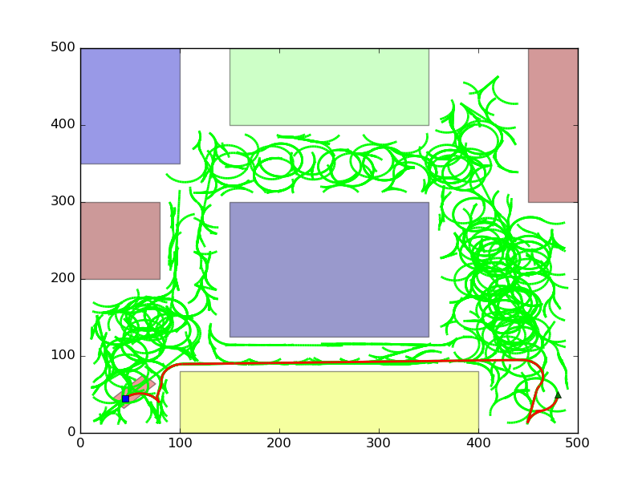

Introduction¶
Motion planning also called piano mover’s problem, is a method for discretizing the movements controls and satisfy movement constraints for an autonomous robot. One example would be for a robot to find a path to move along a building which has obstacles. This is a PSPACE-hard problem.
This project aims to solve a problem involving a Car like robot (Reeds Shepp Car) to move around in a known environment. Algorithm used to solve this problem is RRT* algorithm for non-holonomic robots. Here, if go close to the goal position, it is considered as success.
ReedsShepp Car¶
Car is a single rigid body object.
Following are differential constraints for our non-holonomic car.
- Where,
- \(U_s\): Linear velocity
- \(U_\phi\): Maximum possible Angle between front wheel and axis along the car length.
- L: Linear velocity
Collision Detection¶
Since we are considering a 2D world with polygonal obstacles, it is feasible to use shape library to perform geometric computations. Collision detection is done using shapely library.
Strategies used¶
- The format of robot/car and transforming them to get a set of vertices for a new config is explained in
Config.Environment._change_axis(). - To optimize computation while integrating, each object generates all of its possible motions to by integration and caches the result. Upon requesting the steer method, the minimum is computed from the pre-cached data.
- Static variable called data is used in ReedsShepp class since the car data/specifications won’t change over the course of running a program.
- All the angles are taken in the range [-\(\pi\) \(\pi\)]. While storing and angle, it is rotated based on
ReedsSheppCar.ReedsShepp._roll_over()method. Also in distance function, to make sure same behaviour while comparing a positive angle and negative angle, all angles are converted in [0 2:math:pi]. - If the path is ‘s’ or ‘b’ or ‘f’, then only the starting and end points of the line segment is tracked, otherwise for drawing the curve, the points are discretized based on geom_skip_factor value. This is to ensure memory optimization at the cost of final graph plot legibility.
- The output is stored as JSON file which can be read quickly and be plotted.
- Tolerance concept and weighted knn ensures a better convergence though at a cost of error.
Sample Output¶
Following are the meta information about the figures.
- Blue dot at (45, 45) is the center of rear axle. The rectangle bounding the point is the car.
- Green triangle at (480, 50) is the goal position.
- Green lines/curves are the tree.
- Red lines/curves are the path which the car needs to follow.
- Remaining rectangles are obstacles.
For 1000 random points, non optimal path.
For 1000 random points, better path.
For 10000 random points, even better path.
Note that it is difficult to check for the percentage of optimality due to the differential constraints of robot. However, visual inspection makes it clear that RRT* is better than RRT (Figures of RRT is not shown here).
Improvement possibility¶
- Currently, the goal is connected to the nearest neighbour if a connection is possible. The final maneuver to reach the goal at desired orientation could be implemented.
- Better visualization can be employed.